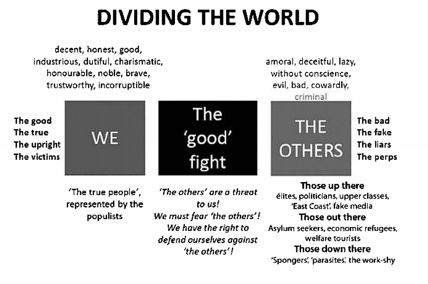
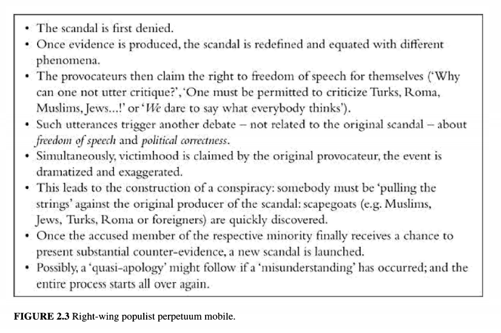

Created Monday 12 October 2020
@nazis @environment @fascism @2020 @ecofascism
Forchtner, Bernhard (ed.) (2020) The Far Right and the Environment: Politics, Discourse and Communication. Routledge, London and New York.
.\Far_right_and_environment.pdf
See NB:Äärioikeiston ympäristöpolitiikka
Sisällys
107- ClimatDenialFarRight-Hultman
NOTE: PAGE NUMBERS REFER TO PAGES OF PDF FILE
Forchtner, B. Far-right articulations of the natural environment
17
Radkau 2014: AGE OF ECOLOGY
Radkau 2014: AGE OF ECOLOGY
History of environmental protection and campaigning does not begin in the 1960s and 70s. It can be traced back to the 19th century when the price of industrialization and urbanization was becoming apparent.
Radkau 2014:11-24 points to a period between Rousseau and the Romantic, arguing that it was in the 1790s that Europe saw a debate familiar to present day controversies, back then concerning the shortage of wood and the potential risk of facing the destruction of forests.
Schama 1995: link b/w national identities and landscape
Schama 1995:10 emphasises the link between national identities and landscape; the latter word entered the English language via the Dutch “landschap” - and the Dutch flood fields are a manifest site of HUMAN ENGINEERING with clear relevance for the identity of this particular community
Dutch and other cases of national identity would “lose much of its ferocious enchantment without the mystique of a particular landscape tradition: its topography mapped, elaborated, and enriched as a homeland” (Schama 1995:15)
Schama 1995:10 emphasises the link between national identities and landscape; the latter word entered the English language via the Dutch “landschap” - and the Dutch flood fields are a manifest site of HUMAN ENGINEERING with clear relevance for the identity of this particular community
Engineering landscape
Dutch and other cases of national identity would “lose much of its ferocious enchantment without the mystique of a particular landscape tradition: its topography mapped, elaborated, and enriched as a homeland” (Schama 1995:15)
Landscape as deeply linked to the nation
Far right perceives land and landscape as being significant for and deeply linked to the nation
But concerns over the natural environment are not uniform
Soil Association and organic movement pioneer Jordan Jenks was a stout fascist
Mussolini saw land as an opportunity to regenerate the people
20
Non-uniformity in far right's concerns abt the environment
Non uniformity of the far rights concerns about the environment: Gemenis et al 2012 analyzed environmental themes in far right environmental communication; different and inconclusive
Forchtner et al 2018 and Forchtner 2019b report strong skepticism towards, but also some acceptance of, mainstream knowledge about climate change by far right actors in Germany and Austria respectively.
Olsen 1999: key features of right wing ecology
Olsen 1999: identifies key features of right wing ecology as
- eco-naturalism: natural world as blueprint for social order
- Eco-organicism: the Volk as an ecosystem
- Eco-authoritarianism: the need for a strong state to deal with the environmental crises of our time
1999:Olsen99
Lockwood 2018: 2 explanations for far right/climate change thinking
Lockwood 2018: proposes two explanations for the relationship between far right actors and climate change skepticism:
- “structuralist”: appeals to those left behind by globalization and technological modernization, and marginalized in post industrial societies through structural change in the global economy (p. 718)
- ideological agenda of far right actors: especially the antagonism between “the people” and a cosmopolitan elite, with climate change and policy occupying a symbolic place in this contrast (p. 712)
- Lockwood argues the explanation focusing on ideology is more compelling
2018:Lockwood18
Forchtner and Kølvraa 2015: making sense of the environment through 3 dimensions
Forchtner and Kølvraa 2015: ideological camps make sense of the natural environment through three dimensions:
- aesthetic: appreciation and enjoyment; visible in protests against wind turbines as “a blight on the landscape”
- Symbolic: community’s historical claim to primacy and sovereignty on a particular section of Earth’s surface
- Material: land in terms of resources it provides for its population and economy
it is not surprising that far right leaders often show a concern for environmental protection
21
29
Fear that climate change policies would undermine national sovereignty
Ch. 2: The trajectory of far-right populism - a discourse-analytical perspective (Wodak)
Ruth Wodak
- far-right populism attempts to reduce social and economic structures in their complexity and porposes simple explanations for complex and often global developments
- the discourse opposes "the true people" to an allegedly corrupt "elite"
- and draws from well-known and established stereotypes of "the Other" and "the Stranger"
30
History of post war populism begins in South America
- many political scientists have argued that the history of post-war populism, both right- and left-wing, started in South America (de la Torre 2014)
- Peron, Alberto Fujimori, Hugo Chavez, Evo Morales, Kirchner
- Peronism a respose to the new Western post-WW2 liberal democratic consensus, and had its roots in the expansion of the industrial economy after the recession in the 1930s, from which the working class, however, did not benefit (James 1988)
- both Peron and Chavez constructed themselves as incarnations of the 'people', thus conflating state and movement
- several populist parties in the US as well:
- Populist party of the 1890s, with anti-trust agenda
- Greenback Party
- Progressive Party of 1912 (Theodore Roosevelt)
- Progressive Party of 1924
- Share Our Wealth movement (1933-35)
32
Defining far-right populism is hard
Questions remain as to whether far-right populism even exists and how to define it, especially as distinct from other ideologies and social movements, such as right-wing extremism/the radical right, 'alt-right', 'right-wing/far-right', populism, fascism, and left-wing populism. Even more fundamentally, there is no consensus on whether far-right populism is an ideology (thin or thick; Kriesi and Pappas 2015:5), a philosophy (Priester 2007:9), a specific media phenomenon (Pajnik and Saure 2017) or a political style (Moffitt 2017) that manifests itself mainly in performance and communication.
- Rydgren, in the preface to the new Handbook of the Radical Right (2018:1-2), claims that the term 'right-wing populism' is obsolete: we are dealing with 'ethno-nationalist' parties which also always contain a populist element.
- in contrast to ethno-nationalist parties, radical-right parties are characterized by their rejection of the democratic system and its institutions
- but these boundaries sometimes become blurred
- A similar argument is advanced by Benjamin van de Cleen (2017:8)
- but e.g. Brubaker (2017) perceives populism as a discursive and stylistic repertoire, a performance
- PERSONALLY AGREE WITH WODAK HERE WHEN SHE SAYS THE IDEOLOGICAL CONTENT COMMUNICATED IS CRITICAL
33
Frequently cited definition of populism
Frequently cited definition of populism: Mudde and Kaltwasser (2017:9-12): populism constitutes a (thin) ideology, realized in various discursive and material practices. Three parameters are important:
- The opposition between "the people" and "the corrupt elite"
- A grounding in the volonté générale of the people
- A thin ideology because it does not constitute a coherent structure of beliefs but assembles contradictory ideologemes in an eclectic fashion
People can refer both to people as sovereign (demos), to the common people, or to the people as ethnos.
Notion of elites can be differentiated into elites with cultural, economic or social power, and elites defined on ethnic grounds
35
Dividing the world graphic

38
Right-wing populist perpetuum mobile

- The scandal is first denied.
- Once evidence is produced, the scandal is redefined and equated with different phenomena.
- The provocateurs then claim the right to freedom of speech for themselves ('Why can one not utter critique?' or 'WE dare to say what everybody thinks')
- Such utterances trigger another debate - not related to the original scandal - about freedom of speech and political correctness.
- Simultaneously, victimhood is claimed by the original provocateur, the event is dramatized and exaggerated.
- This leads to the construction of a conspiracy: somebody must be 'pulling the strings' against the original producer of the scandal: scapeboats (e.g. Muslims, Jews, Turks, Roma or foreigners) are quickly discovered.
- Once the accused member of the respective minority finally receives a chance to present substantial counter-evidence, a new scandal is launched.
- Possibly, a 'quasi-apology' might follow if a 'misunderstanding' has occurred; and the entire process starts all over again.
43
Ch. 3 Environmental communication research: Origins, development and new directions. Hansen, Anders
55
Ch. 4 'Protecting our green and pleasant land': UKIP, the BNP and a history of green ideology on Britain's far right
Emily Turner-Graham
City representing the modernity
- the city represents the modernity, and as such the very antithesis of a healthy living space
- Völkisch thinkers argued for "culture, not civilization"
- Spengler: "A culture has a soul (...) [whereas] civilisation is the most external and artifical state of which humanity is capable"
- virtuous peasant was honest
Delingpole
61
- James Delingpole's The Little Green Book of Eco-fascism: The Plan to Frighten Your Kids, Drive Up Energy Costs and Hike Your Taxes! (2013)
- Delingpole describes himself as a "libertarian conservative"; is executive editor for the London branch of Breitbart News
- describes himself "as a member of probably the most discriminated against subsection in the whole of British society - the white, middle-aged, public-school-and-Oxbridge educated middle class male"
- Nigel Farage has often described himself as an environmentalist
67
Ch. 5 From black to green: analyzing Le Front National's 'patriotic ecology'
Salomi Boukala and Eirini Tountasaki
72
Towards a durable France - Marine Le Pen's green agenda
"The majority of 'collectif pour une écologie patriote-nouvelle écologie' comments refer to issues such as nuclear power, pollution, nutrition, health and European policies, and all of them are developed on the basis of a criticism of the party's political opponents and the constitution of an environmental view that accuses the Anthropocene, the French state and the EU of impairing the quality of life of the French people. However, scientific opinions are absent from the FN's rhetoric on environmental issues and most of the comments are built on contradictions."
- sovereignty and autonomy are central in the FN's environmental discourse
74
Castoriadis: society is an invented representation of reality
Cornelius Castoriadis (1981) claims that the imaginary institution of society is an invented representation of reality which is cultivated to assuage social consciences and becomes acceptable via symbols, which are considered the only truth. Consequently, the nation has an imagined character because it is based on symbols, such as a national flag, anthem and emblem, which its members accept as common symbols, and an invented common history, which members of the nation accept as the absolute truth (1981: 240-244) 1981:ImaginarySociety-Castoriadis
See also Benedict Anderson 1983:ImaginedCommunities-Anderson : considered the nation to be 'an imagined political community; and imagined as both inherently limited and sovereign' (2006)
79
Ch 6 Environmental politics on the Italian far right: Not a party issue?
Giorgia Bulli
- there has never been a successful and long-lasting Green party in Italy
- Biorcio and Lodi 1988 studied environmental political activists in Italy; evidence suggests their involvement started in the mid-1970s following the oil crisis 1988:Biorcio88
- peak environmental mobilization reached against the use of nuclear energy
- environmentalism is not considered a profitable electoral issue by most of the Italian political parties
80
Italian Fascism cannot be compared to the National Socialist ideology in terms of the latter's features of a 'religion of nature' consisting of 'primeval Teutonic nature mysticism, pseudo-scientific ecology, irrationalist anti-humanism and a mythology of racial salvation through a return to the land' (Staundenmaier 2011:26) 2011:StaudenmaierFascistEcology
- fascism was more about "regeneration" of the lost unity between people and nature
Hobbit camps
- three Hobbit Camps organized in 1977, 1978 and 1980
- cultural festivals, centred around concerts by far-right bands
92
Ch 7 Wolves in sheep's clothing? The Danish far right and 'wild nature'
Christoffer Kølvraa
When a heated political debate about immigration of real wolves into Denmark erupted in 2018, the Danish People's Party (DPP) immediately sided with the sheep and their farmers, and in doing so demonstrated more clearly than usual their core idea of nature and its relationship to human societies.
Nature as a core element of far right imaginaries
- nature is a core element in various far right imaginaries
- partly due to the central place that both the aesthetics, symbolism and materiality of the national countryside
- a range of biological/racial metaphors
- in nationalism
- Kølvraa means by "environmental imaginary" a wider, ideologically tinted but not necessarily explicitly politically formulated idea of nature and a set of ideals or assumptions as to its propre relation to human societies.
Roland Barthes, mythologies and 'vertical analysis'
In his early work Mythologies, Roland Barthes demonstrated how seemingly marginal or limited cultural or political phenomena - from the new Citroën to Poujadism - could be analysed to shed light on wider ideological structures (Barthes 2013). Even 'innocent objects' - such as an image of an African boy saluting - could be shown to entail a much wider ideological connotation, and thus became a 'myth'. Barthes insisted that myths had to be analysed by unfolding both the wider semiotics of the object, and the ideological use to which it was being put. In myt, language could be both political and innocent because its function was to naturalize certain meanings - to hide the fact that certain meanings carried a certain ideological perspective (Barthes 2013:215-230). 2013:Mythologies-Barthes
93
- DPP started as a breakaway group from the Progress Party, which first emerged in the early 1970s as a populist party with a strong anti-tax agenda
94
DPP's spokesman on energy policy, Morten Messerschmidt, developed a 'scientific' line of argument, seeking - as is typically the case on the far right - to discredit mainstream climate change scientific consensus, by resorting to and elevating as the 'people's scientists', those relatively few voices in the scientific community who doubt the anthropogenic nature of climate change.
- national and international "climate change lobbies" are portrayed either as a transnational conspiracy designed to rob nation-states of their sovereignty, or as a dogmatic "thought police" geared to squash any ideas but their own.
- besides these elements of what might be identified as "attribution" and "process" scepticism, the DPP has also voiced a "response skepticism"
- ironically, implicitly admits the link between climate change and human activity
- moves to fatalism and "insignificance complex" of arguing that given Denmark's small size it does not matter what the Danes do.
- Pia Kjaersgaard caused a minor scandal in 2015 when she bluntly admitted in a radio interview that nature was simply not a priority for the DPP
One almost gets the impression that anthropogenic climate change is rejected because its solution would imply transnational forms of political agency, and the resultant 'sacrifice' of national sovereignity.
...what quickly comes to dominate the DPP's stand is the ability to shift the discussion from one about the 'reality' of climate change, to one about the democratic (if not heroic) legitimacy of doubting and questioning all accepted or authoritative knowledge - including the reality and anthropocentric nature of climate change. thereby, the DPP could move away from the increasingly weaker 'scientific' argument against anthropogenic climate change and towards a mroe classic populist self-conception as persecuted and ridiculed by powerful (international) elites brutally enforcing their ideological dogma.
95
The cultural semiotics of the wolf
The politics of lupophobia
100
[in contrast to the organicist, ecological and often more overtly racialist imaginaries that can be found towards the extreme end of the far-right spectrum] Their environmental imaginary is by contrast almost radically anthropocentric. It is ultimately an idea of (Danish) nature in which not just human needs and security, but human enjoyment, ease and freedom from any worry or inconvenience, are the structuring laws. In this imaginary, the relationship between the Danes and their countryside is ultimately imagined in terms of property and the resultant rights of use. The wolf is ultimately condemned not as a feared invader, but as an annoying trespasser in a countryside where the rights of occupation and enjoyment have long been passed wholly and totally to its human inhabitants.
103
Ch 8 The far right and climate change denial
Denouncing environmental challenges via anti-establishmet rhetoric, marketing of doubts, industrial/breadwinner masculinities enactments and ethno-nationalism
Martin Hultman, Anna Björk and Tamya Viinikka
107
- links between conservative and free market think tanks and Swedish Democrats
- men whose careers would have been impossible without human exploitation of nature, both as an idea and in practice
- acknowledging climate change would be to recognize how their own life project is unsustainable
109
The merge between far-right nationalism and climate change denialism is based upon the ideological similarities in viewing the world from an industrial masculinities viewpoint, not wanting to let go of the colonial extractive logic that has served these men well, but violated the planet.
- Swedish Democrats argue that emission controls should take place elsewhere because climate policies would drive Swedish industry abroad
- SD has turned towards neo-liberalism supporting the marketisation of welfare systems
"We in Sweden Democrats want greater focus on the environment in Sweden and our immediate area, while the other parties (including the Conservatives) often prefer to discuss global issues that Sweden has relatively little influence over"
- for the SDs the problem is everyone else
The Earth faces a dire political situation in which climate denialism in many countries has merged with far-right actors, upheld, as we argue, by industrial/breadwinner masculinities and funded by global extractive industry fossil fuel companies.
114
Ch 9 The allure of exploding bats
The Finns Party's populist environmental communication and the media
Niko Hatakka and Matti Välimäki
- provides an overview of the Finns Party's environmental communication and a closer analysis of the performative aspects of Finnish populist anti-environmentalism in the media
- PS's shift from rural populism towards the populist radical right is visible also in the party's environmental communication
The traditional landscape of the Finnish countryside plays a fundamental role in the Finns Party's ideological heartland, an imaginary of uncorrupted time and place where everything is well.
The party has repeatedly communicated its support for local toxin-free agriculture and keeping Finnish nature clea, but at the same time the party has avidly opposed environmental protection policies. The party has argued that various forms of environmental regulation breach the people's autonomy over their land and that they are economically detrimental to the ordinary tax-payer.
- regulation framed as restrictions to rural people's fundamental rights such as freedom to choose their trade and place of residence
- in the later programmes environmental protection is supported as long as it is 'reasonable'
- in its official platforms, the Finns Party has never questioned the validity of climate change as a natural phenomenon, but it has severely questioned whether international cooperative means to curb climate change are efficient and reasonable from the point of view of the Finnish people.
- supranational environmental protection is seen as a hindrance for the competitiveness of the Finnish economy
- environmental protection is framed as a trade-off to economic growth
{kind=link}
{kind=link}